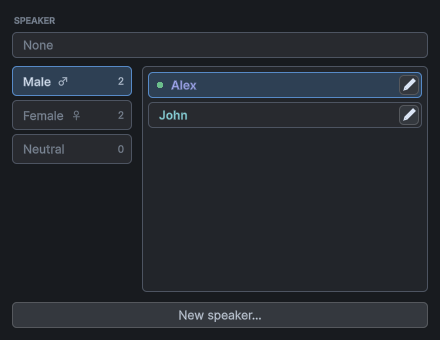
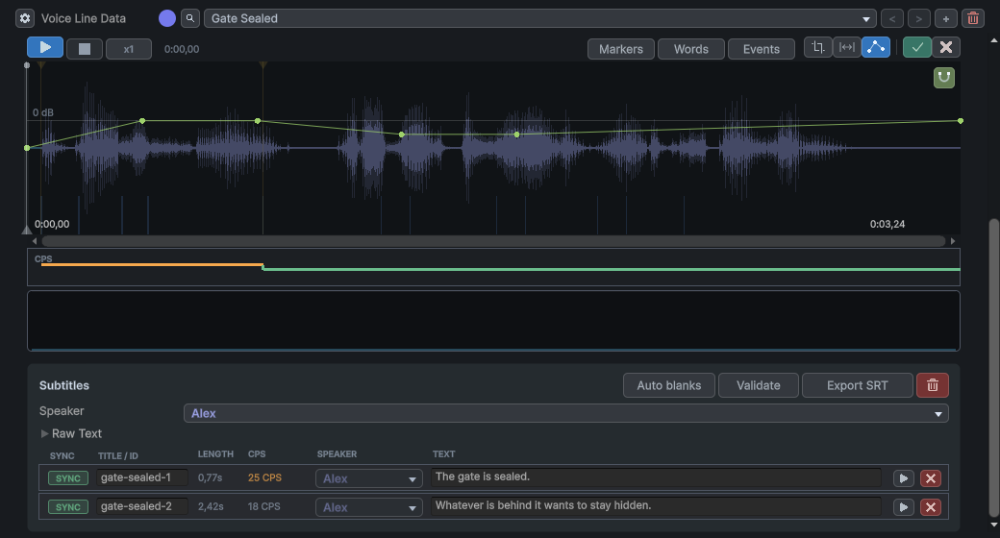
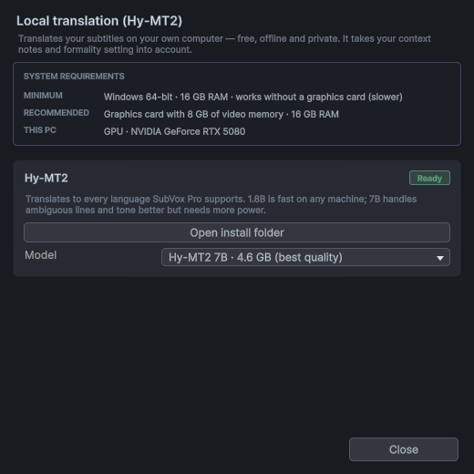
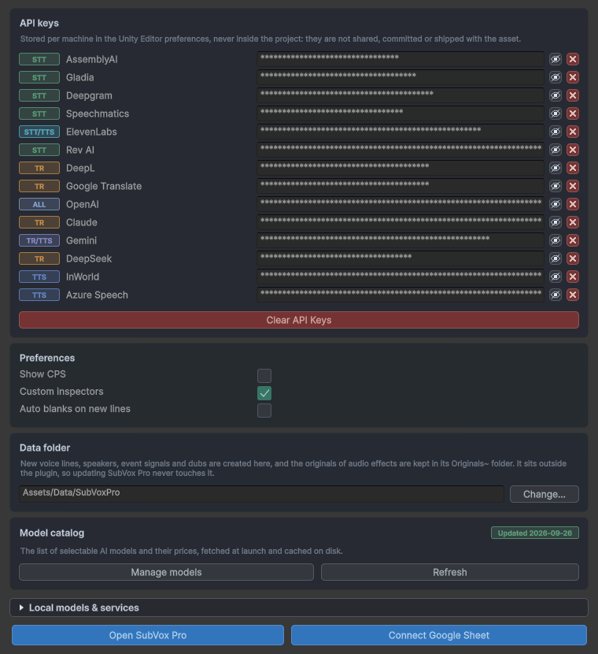

SubVox Pro
SubVox Pro wandelt Ihre Voice Lines direkt in Unity in synchronisierte Untertitel und Sprachfassungen um:
- Transkribieren Sie einen Audio-Clip in Untertitel mit Zeitangaben – über einen Cloud-Dienst oder vollständig offline.
- Bearbeiten Sie das Timing anhand einer Wellenform, formatieren Sie Wörter und überprüfen Sie die Lesegeschwindigkeit.
- Übersetzen Sie in 50 Sprachen und vertonen Sie die Texte per Sprachsynthese, optional mit der jeweiligen Stimme der Figur.
- Spielen Sie alles mit wenigen Komponenten im Spiel ab, lösen Sie über eine Voice Line Gameplay-Ereignisse aus und ziehen Sie Voice Lines in die Unity Timeline.
Inhalt
- Vor dem Start
- Schnellstart
- Das SubVox Pro-Fenster
- Transkribieren
- Übersetzen
- Mit Sprachsynthese vertonen
- Speaker und Stimmprofile
- Audio bearbeiten
- Voice Lines in Ihrem Spiel abspielen
- Gameplay über eine Voice Line auslösen
- Unity Timeline
- Viele Dateien gleichzeitig verarbeiten
- Offline-Engines (kein Account, kein API-Schlüssel)
- Übersetzung durch Menschen mit Google Sheets
- Einstellungen
- Tastatur und Maus
- Unterstützte Sprachen
- Ihre Daten und Online-Dienste
- KI-generierte Stimmen in Ihrem Spiel
- Speicherorte Ihrer Dateien
- Aktualisieren und Deinstallieren
- Fehlerbehebung
- Support
Wie Sie für jeden Dienst einen Account und einen API-Schlüssel erhalten, erfahren Sie Schritt für Schritt unter Anbieter einrichten.
Vor dem Start
- Unity 2022.3 LTS oder neuer (einschließlich Unity 6), beliebige Render-Pipeline (Built-in, URP, HDRP).
- TextMesh Pro – importieren Sie TMP Essentials einmalig, falls dies in Ihrem Projekt noch nicht geschehen ist. Unter Unity 2022.3 installieren Sie zunächst das Package TextMeshPro über den Package Manager (in Unity 6 ist es bereits enthalten).
- Unity Timeline ist optional: Die Timeline-Funktionen stehen zur Verfügung, sobald das Package installiert ist.
- Im Spiel läuft SubVox Pro auf jeder von Unity unterstützten Plattform.
- Im Editor wurde SubVox Pro unter Windows getestet. Die Cloud-Dienste mit Ihren eigenen API-Schlüsseln sollten auch in den Editoren unter macOS und Linux funktionieren, wurden dort jedoch noch nicht getestet. Die Offline-Engines (Transkription, Übersetzung und Vertonung ohne Account) setzen den Editor unter Windows voraus.
Schnellstart
Von einem Audio-Clip zu synchronisierten Untertiteln auf dem Bildschirm in wenigen Minuten.
Alle Funktionen von SubVox Pro erreichen Sie außerdem mit einem Klick über Tools ▸ SubVox Pro ▸ Hub: ein Fenster mit Kacheln, über die Sie den Voice Line Editor, die Stapelverarbeitung, Google Sheets, den Anbietervergleich, die zusätzlichen Offline-Modelle, die Beispielszene, die Dokumentation, die Anleitung zur Einrichtung der Anbieter und die Einstellungen öffnen. Der Startbildschirm verfügt über neun Kacheln. Documentation öffnet einen zweiten Bildschirm mit ausschließlich Online (Anleitung, Anbieterleitfaden und Skript-Referenz mit einer Sprachauswahl für Englisch und Französisch) und Local (das englische PDF, das offline verfügbar ist). Mit Back gelangen Sie zum Startbildschirm zurück; Provider Setup öffnet dasselbe PDF direkt im Abschnitt zur Einrichtung der Anbieter.


1. Transkriptionsmethode wählen. Fügen Sie entweder einen API-Schlüssel für einen Spracherkennungsdienst unter Tools ▸ SubVox Pro ▸ Settings ein (wo Sie einen erhalten) oder verwenden Sie unter Windows Whisper oder Parakeet. Beide laufen kostenlos offline und bieten bei der ersten Verwendung den Download ihres Modells an.
2. Eine Voice Line erstellen. Legen Sie sie über Assets ▸ Create ▸ SubVox Pro ▸ Voice Line an, wählen Sie sie aus und klicken Sie im Inspector auf Set Up Voice Line. Das SubVox Pro-Fenster öffnet sich mit einer neuen Voice Line: Überprüfen Sie deren Language (beim ersten Mal Englisch, danach die zuletzt ausgewählte Sprache), wählen Sie Add an audio track und Ihren Clip aus oder nehmen Sie einen auf.
Alternativ klicken Sie im Project-Fenster mit der rechten Maustaste auf eine Audiodatei und wählen SubVox Pro ▸ Set Up Voice Line. Legen Sie den Speicherort der neuen Voice Line fest; der Editor öffnet sich mit der bereits zugewiesenen Audiodatei.

3. Transkribieren. Wählen Sie unter AI Tools ▸ Transcription den Anbieter und die gesprochene Sprache aus, klicken Sie auf Analyze und anschließend auf Split. Ihre Untertitel erscheinen auf der Wellenform.
4. Anpassen. Ziehen Sie die Marker auf der Wellenform, korrigieren Sie den Text in der Liste darunter und drücken Sie Space, um sich das Audio anzuhören.
5. Im Spiel anzeigen. Fügen Sie die Prefabs [SubVox Pro] und Subtitle Displayer (SubVoxPro/Prefabs) in
Ihre Szene ein und spielen Sie anschließend die Voice Line ab:
using SubVoxPro;
SubVox.Play(myVoiceLine);
Möchten Sie es zunächst in Aktion sehen? Öffnen Sie Examples im Hub (oder Tools ▸ SubVox Pro ▸ Example Scenes): drei fertige Szenen – ein 3D-Tempel, eine 2D-Neonstation und eine Noir-Visual-Novel – mit Voice Lines in vier Sprachen, Sprechblasen, Dialogsequenzen, Voice-Events und Untertiteloptionen. Drücken Sie einfach auf Play.
Das SubVox Pro-Fenster

Öffnen Sie es über Tools ▸ SubVox Pro ▸ Voice Line Editor oder über Set Up Voice Line im Inspector einer Voice Line. Von oben nach unten:
- Voice Line Data – die Voice Line, die Sie gerade bearbeiten, mit Schaltflächen zum Erstellen einer neuen, zum Durchsuchen der anderen, zum Aufteilen und zum Löschen. Der farbige Punkt ist ein Tag, das auf dem Symbol des Assets im Project-Fenster erscheint und Ihnen beim Sortieren Ihrer Voice Lines hilft.
- Source – die Auswahlfelder AUDIO und SUBTITLES. Jede Voice Line verfügt über eine Ausgangssprache (die Flagge; klicken Sie darauf, um sie zu ändern) und eine Spur pro übersetzter oder vertonter Sprache. Die beiden Auswahlfelder sind unabhängig voneinander, sodass Sie beispielsweise französische Untertitel lesen können, während Sie den englischen Ton hören.
- AI Tools – Transkription, Übersetzung und Vertonung (siehe unten).
- Timeline – die Wellenform mit Ihren Untertitel-Markern. Jeder Marker kennzeichnet den Beginn eines Untertitels; ein Marker ohne Text leert die Untertitelanzeige (ein Leermarker).
- Live preview – der Untertitel an der Position des Abspielkopfs, so wie er im Spiel erscheinen wird. Wählen Sie darüber eine Farbe oder einen Stil aus und ziehen Sie dann über Wörter, um sie zu formatieren (Ziehen mit gedrückter rechter Maustaste entfernt die Formatierung).
- Subtitles – eine Zeile pro Untertitel: Name, Dauer, Speaker und Text, dazu eine Schaltfläche zum Abspielen.
Tags und Sprachen
Klicken Sie auf das Tag neben Voice Line Data, um sowohl eine Farbe als auch eine Form auszuwählen. Mit Clear tag entfernen Sie es. Dank der Form lassen sich Voice Lines auch ohne Farbunterscheidung auseinanderhalten. Klicken Sie auf A-Z oder 0-9, um einen Buchstaben oder eine Ziffer als Form zu verwenden.

Klicken Sie auf die Flagge der Ausgangssprache, um die gesprochene Sprache auszuwählen. Flaggen stehen für Sprachen, nicht für die Nationalität eines Speakers; die Auswahl zeigt die Namen und Codes der Sprachen an, sodass Sie die Flaggen nicht erkennen müssen.

Ohne Audio beginnen

Eine Voice Line kann statt mit Audio auch mit Text beginnen: Wählen Sie Add a subtitles track und importieren Sie eine .srt-Datei (Untertitel mit Zeitangaben), eine .txt-Datei (ein Untertitel pro Zeile, mit automatisch festgelegten Zeitangaben für eine angenehme Lesegeschwindigkeit) oder geben Sie die Untertitel selbst ein. Legen Sie unter Length die Dauer der Voice Line fest; so lange wird sie im Spiel wiedergegeben, bis Sie Audio hinzufügen oder aus dem Text eine Sprachfassung generieren.
Audio aufnehmen

Record with a microphone (unter Add an audio track oder über das + neben dem AUDIO-Auswahlfeld) öffnet ein kleines Aufnahmefenster: Wählen Sie das Mikrofon aus, achten Sie auf den Pegel, nehmen Sie auf, hören Sie sich die Aufnahme an und wählen Sie anschließend Use recording. Die Aufnahme wird als WAV-Datei neben der Voice Line gespeichert. Gestatten Sie Unity unter macOS in den Systemeinstellungen die Nutzung des Mikrofons.
Untertitel überprüfen
- Show CPS (unter Settings) zeigt die Lesegeschwindigkeit jedes Untertitels an und markiert Untertitel, die zu schnell sind.
- Check Subtitles (wird zusammen mit Show CPS angezeigt) geht nacheinander alle Probleme durch – leere oder mehrfach vergebene Namen, Untertitel außerhalb des Clips, Überlappungen, Untertitel mit zu hoher Lesegeschwindigkeit – und bietet Korrekturen per Mausklick. Alle Änderungen können rückgängig gemacht werden.
- Auto blanks blendet den Untertitel aus, solange niemand spricht, ohne Marker hinzuzufügen. Aktivieren Sie die Funktion in ihrem Popup-Fenster und legen Sie fest, wie lange eine Sprechpause mindestens dauern muss; die ausgeblendeten Bereiche werden in der Wellenform schattiert dargestellt.
- Export SRT speichert die Untertitel als
.srt-Datei.

Silence legt fest, wie viel leiser eine Pause im Vergleich zur Stimme sein muss; Min pause ignoriert sehr kurze Pausen. Hold out zeigt den Text noch kurz an, nachdem die Stimme verstummt ist, und Lead in blendet ihn wieder ein, bevor das Sprechen fortgesetzt wird. Only between two lines verhindert, dass ein Untertitel mitten im Satz verschwindet und wieder erscheint.
Eine Voice Line löschen
Die Papierkorbschaltfläche löscht die Voice Line. Dabei werden die dazugehörigen Dateien aufgelistet: Die von SubVox Pro generierten Dateien (Sprachfassungen, Aufnahmen) sind ausgewählt, Ihre eigenen Dateien nicht, und eine Datei, die an anderer Stelle noch verwendet wird, ist gesperrt. Alles wird in den Papierkorb des Betriebssystems verschoben und kann daher wiederhergestellt werden.
Eine Voice Line aufteilen
Wenn eine Voice Line mehrere Momente enthält, die Sie getrennt abspielen möchten, teilt die Schaltfläche zum Aufteilen (neben dem Papierkorb) sie in mehrere Voice Lines auf. Klicken Sie zwischen zwei Untertitel, um dort zu schneiden, fügen Sie so viele Schnitte wie nötig hinzu und benennen Sie die neuen Voice Lines. Ein Schnitt liegt immer zwischen zwei Untertiteln, in der Pause, die sie trennt.
Jeder Teil behält alles, was zu seinen Untertiteln gehört: Audio, Übersetzungen, Sprachfassungen, Sprecher, Audioeffekte und Events. Der erste Teil bleibt in der aktuellen Voice Line, sodass Ihre Szenen und Timelines weiterhin auf sie verweisen; die anderen Teile werden daneben erstellt. Jeder Teil erhält eigene Audiodateien, und Ihre Originaldateien bleiben erhalten. Das Aufteilen kann nicht rückgängig gemacht werden.
Transkribieren

- Wählen Sie einen Provider und, falls dieser mehrere Modelle anbietet, ein Model aus. Die Statusanzeige auf der rechten Seite zeigt an, ob er einsatzbereit ist (Schlüssel eingerichtet oder Modell heruntergeladen).
- Legen Sie die Audio Language fest (einige Anbieter erkennen diese automatisch).
- Klicken Sie auf Analyze: Das Audio wird in Wörter mit Zeitangaben umgewandelt.
- Klicken Sie auf Split: Die Wörter werden zu Untertiteln gruppiert. Über die Split settings legen Sie fest, wie lange ein Untertitel maximal dauern darf, wie früh er vor seinem ersten Wort erscheint und ob Untertitel an Satzzeichen enden sollen.
Unter Word timing wählen Sie aus, woher die Zeitangaben für jedes Wort stammen: From the provider (Standard) behält die von der Transkription zurückgegebenen Zeitangaben bei, Qwen3 aligner (local) ordnet jedes Wort unmittelbar nach Split erneut zeitlich dem Audio zu, ohne den Text zu ändern – die präziseste Option für wortweise angezeigte Untertitel (einmal installieren). Bei einer Sprache, die Qwen3 nicht unterstützt, werden die Zeitangaben des Anbieters beibehalten.
Anbieter: AssemblyAI, Gladia, Deepgram, Speechmatics, ElevenLabs, Rev AI, OpenAI oder Whisper und Parakeet offline. Sie sind sich nicht sicher, welchen Sie wählen sollen? Unter Tools ▸ SubVox Pro ▸ Provider Comparison werden sie direkt miteinander verglichen – Preis, kostenloser Tarif, kommerzielle Nutzung, Sprachen.

Tipp: OpenAI gpt-transcribe liefert Text ohne Zeitstempel für die einzelnen Wörter; die Zeitangaben werden über den gesamten Clip geschätzt. Nutzen Sie die lokale zeitliche Zuordnung oder einen Anbieter mit Wortzeitstempeln, wenn die zeitliche Genauigkeit entscheidend ist.
Die Transkription nutzt das im AUDIO-Auswahlfeld ausgewählte Audio, sodass Sie auch eine Sprachfassung transkribieren können.
Übersetzen

- Wählen Sie einen Provider: DeepL, Google Translate, OpenAI, Claude, Gemini, DeepSeek oder Hy-MT2 offline.
- Haken Sie unter Target eine oder mehrere Zielsprachen an oder wählen Sie eine Voreinstellung, um mehrere Sprachen gleichzeitig zu erstellen.
- Legen Sie unter Formality die Anrede fest (formell oder informell), sofern die Sprache diese Unterscheidung kennt.
- Klicken Sie auf Translate. Jede Sprache erhält eine eigene Spur; wechseln Sie mit dem SUBTITLES-Auswahlfeld zwischen ihnen.

Haken Sie im Popup-Fenster Target links beliebig viele Sprachen an und speichern Sie sie rechts mit Save as preset, um sie wiederzuverwenden. Wenn Sie eine Voreinstellung auswählen, wird in einem Arbeitsgang in alle ihre Sprachen übersetzt; in der rechten Spalte bearbeiten Sie ihren Namen und ihre Sprachen.
Unterstützen Sie den Übersetzer. Mehrdeutige Untertitel lassen sich mit Kontext besser übersetzen: Geben Sie einen globalen Kontext für die gesamte Voice Line ein (Schaltfläche mit Sprechblasensymbol) und bei Bedarf eine Anmerkung zu einem einzelnen Untertitel (dessen Schaltfläche mit Sprechblasensymbol in der Liste).
Halten Sie die Übersetzungen synchron. Wenn Sie einen Quelluntertitel nach der Übersetzung ändern, erscheint bei seinen Übersetzungen eine OUT-Statusanzeige: Klicken Sie auf Synchronize, um nur die geänderten Untertitel neu zu übersetzen, oder klicken Sie auf die Statusanzeige, sobald Sie den Untertitel überprüft haben. Wenn Sie Marker so verschieben, dass ein Satz an einer neuen Stelle geteilt wird, zeigen die übersetzten Untertitel eine CUT-Statusanzeige an: Mit Fix splits wird ein KI-Anbieter beauftragt, die Übersetzung an der inhaltlich entsprechenden Stelle zu teilen, ohne ihre Wörter zu ändern. Die Sprachfassungen werden automatisch angepasst.
Mit Sprachsynthese vertonen

- Wählen Sie im Auswahlfeld SUBTITLES die Sprache für die Vertonung aus.
- Wählen Sie unter AI Tools ▸ Dubbing einen Provider und eine Voice aus. Die Schaltfläche ▶ neben einer Stimme spielt eine Hörprobe ab. Mit Use speakers' voices verwendet jeder Untertitel die Stimme seines Speakers.
- Wählen Sie den Modus unter Generation:
- Each subtitle — ein Take pro Untertitel: am einfachsten einzeln zu korrigieren;
- Per speaker — ein Take pro Gruppe von Untertiteln derselben Figur: natürlicherer Sprachfluss;
- All together — ein durchgehender Take: am natürlichsten, aber alles wird auf einmal neu generiert;
- Groups — Sie wählen aus, welche Wörter in einem Take gesprochen werden (siehe unten).
- Klicken Sie auf Generate audio. Die Vertonung wird als neue Audiospur angelegt und anstelle des Originals wiedergegeben, wenn diese Sprache aktiv ist.
Groups-Modus. Wenn Sie Groups auswählen, wird das Werkzeug Groups oberhalb der Wellenform aktiviert. Jede Gruppe wird in einem Take mit der Stimme und dem Stimmprofil ihres ersten Wortes gesprochen, und der Untertiteltext erhält die Farbe der Gruppe. Anfangs umfasst eine Gruppe den gesamten Text. Ziehen Sie innerhalb einer Gruppe, um sie in drei Gruppen aufzuteilen, wobei die neue Gruppe in der Mitte entsteht: Sie kann mitten in einem Untertitel beginnen oder enden, und jede neue Gruppe erhält eine eigene Farbe. Ziehen Sie die Grenze zwischen zwei Gruppen, um sie zu verschieben: Schieben Sie sie über eine ganze Gruppe hinaus, wird diese Gruppe entfernt. Ziehen Sie sie vor dem Loslassen wieder zurück, wird die Gruppe wiederhergestellt. Klicken Sie mit der rechten Maustaste auf eine Gruppe, um sie zu entfernen: Die benachbarte Gruppe nimmt ihren Platz ein. Die Papierkorb-Schaltfläche führt alles wieder zu einer Gruppe zusammen. Gruppen werden pro Untertitelsprache gespeichert.
Anbieter: InWorld, ElevenLabs, Gemini, OpenAI, Google Cloud, Azure sowie offline Kokoro (Englisch) und Chatterbox (21 Sprachen, behält die Stimme jeder Figur bei), außerdem Qwen3 TTS 1.7B (zehn Sprachen, Stimmklonung anhand von Referenzaudio, vorgegebene Stimmen und Stimmgestaltung) und VoxCPM2 (30 Sprachen, Stimmklonung anhand von Referenzaudio mit schriftlichen Stilanweisungen und Stimmgestaltung).
- Word timing — lassen Sie die Einstellung auf Qwen3 aligner (local), damit Wörter genau dann erscheinen, wenn sie gesprochen werden (einmal installieren), oder wählen Sie Estimated, wenn Sie Untertitel nicht Wort für Wort einblenden.
- Voice direction — mit der Sprechblasen-Schaltfläche neben der Stimme geben Sie den Tonfall vor (zum Beispiel ruhig, flüsternd), sofern der Anbieter solche Anweisungen unterstützt.
- REGEN — wenn die Vertonung eines Untertitels nicht mehr passt (Text, Stimme oder Stimmprofil wurden geändert), erscheint darauf ein orangefarbener REGEN-Chip. Bewegen Sie den Mauszeiger darüber, um den Grund zu sehen, und klicken Sie darauf, um nur die erforderlichen Inhalte neu zu generieren.
- Stimmklonung — wählen Sie bei ElevenLabs (kostenpflichtiger Tarif), Chatterbox, Qwen Base oder VoxCPM2 Original voice, um jede Figur mit
ihrer eigenen, aus dem Quellaudio geklonten Stimme zu vertonen. Sie können eine Stimme auch aus einem Audioclip klonen, der im Ordner
VoicesIhres Datenordners liegt. Klonen Sie nur Stimmen, zu deren Nutzung Sie berechtigt sind.
OpenAI und einige andere Dienste verlangen, dass Sie Ihre Spielerinnen und Spieler darauf hinweisen, dass die Stimmen KI-generiert sind — siehe Provider Setup.
Speaker und Stimmprofile
Speaker

Ein Speaker ist eine Figur: Dazu gehören ein Name, der in der eigenen Farbe vor ihren Untertiteln angezeigt wird, und ihre Stimmen für die Vertonung. Erstellen Sie einen Speaker über Assets ▸ Create ▸ SubVox Pro ▸ Speaker oder über die Speaker-Auswahl im Fenster.
- Legen Sie den Speaker für eine ganze Voice Line im Feld Speaker oberhalb der Liste fest oder für einen einzelnen Untertitel in dessen Zeile.
- Im Inspector des Speakers wählen Sie unter Text-to-speech voices die Stimme pro Anbieter aus, mit einer Standardstimme für alle Sprachen und optionalen abweichenden Einstellungen pro Sprache.
- Im Subtitle Displayer (oder Subtitle Document Displayer) legt Speaker Name Mode fest, ob der Name vor dem Untertitel (Inline), darüber (Above) oder gar nicht (Hidden) angezeigt wird. Ein Speaker kann auch eine eigene Schriftart haben: Font (TextMeshPro) für den Subtitle Displayer, Font (UI Toolkit) für den Subtitle Document Displayer.
- Mit Keep Background Between Subtitles bleibt während einer Pause zwischen zwei Untertiteln nur das Untertitelpanel sichtbar. Die Option ist standardmäßig aktiviert; eine Pause vor dem ersten oder nach dem letzten Untertitel blendet das Panel weiterhin aus.

Die Speaker-Auswahl gruppiert Figuren nach Geschlecht. Mit dem Bleistift bearbeiten Sie einen vorhandenen Speaker; New speaker erstellt einen neuen. Bei einer abweichenden Zuweisung für einen einzelnen Untertitel stellt der oberste Eintrag den Standard-Speaker der Voice Line wieder her.
Stimmprofile
Ein Stimmprofil ist eine wiederverwendbare Sprechanweisung — wütend, geheimnisvoll, flüsternd … Erstellen Sie eines über einen Speaker (New personality) oder über Assets ▸ Create ▸ SubVox Pro ▸ Voice Personality. Anschließend formulieren Sie die Anweisung entweder selbst oder kombinieren eine Emotion und eine Sprechweise, deren Intensität sowie Sprechtempo, Lautstärke, Tonhöhe und Artikulation. Klicken Sie auf sein Symbol, um eines von etwa vierzig Symbolen auszuwählen (Emotionen, Stimmungen, Stimme und Charakter), damit Sie es in den Listen auf einen Blick erkennen.
Weisen Sie jedem Untertitel über seinen Chip in der Liste ein Stimmprofil zu (im Modus Each subtitle) oder verwenden Sie das Standard-Stimmprofil des Speakers. Jeder Anbieter setzt um, was er kann, in der Form, die er versteht: geschriebene Anweisung, Audio-Tags oder Sprechstile; andere befolgen nur das Sprechtempo. Der Tooltip des Chips zeigt Ihnen, was die ausgewählte Stimme davon verwendet. Ein Stimmprofil legt fest, wie eine Zeile gesprochen wird, nicht wer spricht: Das Alter einer Stimme gehört zu ihrer Beschreibung (siehe unten).
Audio bearbeiten
Die Schaltflächen rechts in der Symbolleiste der Zeitleiste bearbeiten das Audio selbst. Jede Bearbeitung lässt sich mit Ctrl+Z rückgängig machen.

Die Schaltfläche Audio effects öffnet die Effektliste. Angewendete Effekte erscheinen zuerst; wählen Sie einen aus, um ihn zu bearbeiten, oder klicken Sie auf sein Kreuz, um ihn zurückzusetzen und zu entfernen.
- Crop — Ziehen Sie die Griffe am Anfang und Ende und klicken Sie dann auf Apply crop. Dabei wird die Audioquelldatei überschrieben. Bewahren Sie daher eine Kopie der vollständigen Aufnahme auf, falls Sie diese noch benötigen könnten.
- Pause einfügen / Segment entfernen (die Schaltfläche
|↔|) — Ziehen Sie mit gedrückter linker Maustaste, um Stille einzufügen, und mit gedrückter rechter Maustaste, um einen Teil herauszuschneiden. Nachfolgende Untertitel, Wörter und Ereignisse verschieben sich mit dem Audio. Praktisch, wenn eine TTS-Stimme zwei Sätze ohne Pause hintereinander spricht. - Audio effects — Lautstärkekurve, Ein- und Ausblenden, Normalisierung, Kompressor, Limiter, Noise-Gate, Filter, Equalizer, Telefon-/Radioeffekt, Tonhöhe, Intonation, Panorama, entfernungsabhängige Klangdämpfung, Raumhall. Zeichnen Sie auf der Zeitleiste ein, wo ein Effekt wirken soll, stellen Sie mit den Schiebereglern ein, wie er wirken soll, und klicken Sie dann auf Apply effects. Das Magnetsymbol in der Ecke einer Kurve richtet Punkte am Basiswert, an 0 und an benachbarten Punkten aus (halten Sie Alt gedrückt, um einen Punkt frei zu platzieren). SubVox Pro bewahrt Ihr Originalaudio auf, sodass Effekte bearbeitbar bleiben; Flatten macht sie dauerhaft, Discard entfernt sie alle.
- Intonation — Die Sprechmelodie wird oben angezeigt; zeichnen Sie in der darunterliegenden Spur ein, um wie viel sie angehoben (+) oder abgesenkt (−) werden soll. Bei 0 bleibt sie unverändert. Das Magnetsymbol lässt Ihren Strich in dem daneben eingestellten Raster einrasten (standardmäßig 0,5 st; halten Sie Alt gedrückt, um frei zu zeichnen), und das Wellensymbol glättet neue Striche über den von Ihnen festgelegten Zeitraum (bei 0 wird Ihr Strich exakt übernommen). Ziehen mit gedrückter rechter Maustaste stellt die ursprüngliche Stimme wieder her, und Esc bricht einen Strich ab. Der Rest der Voice Line bleibt unverändert. Pitch verschiebt die Tonhöhe einer ganzen Passage und zeigt dieselbe Melodie an. Beide Funktionen bewahren den natürlichen Klang der Stimme; mit wenigen Halbtönen (st) erzielen Sie die besten Ergebnisse. Das Dropdown-Menü Engine bietet WORLD (natürlich, Standard), PSOLA (weniger rechenintensiv) oder Classic (am schnellsten; verändert auch den Charakter der Stimme).

Die obige Lautstärkekurve senkt die Lautstärke nur in den ausgewählten Passagen. Die Wellenform macht den zeitlichen Verlauf sichtbar, während die Punkte die Verstärkung steuern; 0 dB lässt die ursprüngliche Lautstärke unverändert.

In Intonation zeigt die obere Kurve die erkannte Sprechmelodie. Die untere Spur zeigt Ihre Änderung in Halbtönen: Positive Werte erhöhen die Tonhöhe, negative Werte senken sie, und null lässt die ursprüngliche Tonhöhe unverändert. Beide werden getrennt dargestellt, damit Sie sehen können, wie die ursprüngliche Sprechmelodie verlief und was Sie ändern.
Voice Lines in Ihrem Spiel abspielen
Die Szene einrichten
Fügen Sie das Prefab [SubVox Pro] (
SubVoxPro/Prefabs) einmal in Ihre Startszene ein. Es spielt Voice Lines ab und löst deren Ereignisse aus. (Falls Sie dies vergessen, wird beim ersten Abspielen einer Voice Line ein Standard-Player erstellt und eine Warnung ausgegeben.)Fügen Sie das Prefab Subtitle Displayer (
SubVoxPro/Prefabs) in die Szene ein: ein vorgefertigtes Untertitelfeld am unteren Bildschirmrand, das bei langen Untertiteln mitwächst und zwischen ihnen ausgeblendet wird. Passen Sie das Design nach Belieben an (Schriftart, Farben, Position, Größe) oder fügen Sie die Komponente Subtitle Displayer zu Ihrem eigenen Canvas hinzu und weisen Sie ihr das Textelement unter Subtitle Text zu (sowie das Hintergrundelement unter Background, damit es zwischen den Voice Lines ausgeblendet wird).Verwenden Sie UI Toolkit anstelle eines Canvas? Fügen Sie stattdessen das Prefab Subtitle Document Displayer ein. Es zeigt die gleichen Untertitel, Sprechernamen und Stile in einem UI-Toolkit-Dokument an. Passen Sie das Design in
Subtitle Document.uss(SubVoxPro/Prefabs/UI/UI Toolkit) an oder fügen Sie die Komponente Subtitle Document Displayer zu Ihrem eigenen UI Document hinzu und geben Sie den Namen des Label-Elements an, das den Text anzeigen soll (sowie den Namen des Elements, das zwischen den Voice Lines ausgeblendet werden soll).
Eine Voice Line aus dem Code abspielen
Alles läuft über SubVox. Kopierfertige Skripte für die gängigen Fälle (Warten auf eine Voice Line, Reagieren auf ein
Ereignis, ein Sprachauswahlmenü, ein Optionsmenü, ein Dialogprotokoll, Video-Untertitel…) finden Sie unter SubVoxPro/Example/Snippets, und
Ihr Code-Editor zeigt Ihnen während der Eingabe eine Beschreibung jeder Klasse, Methode und Einstellung an. Die vollständige Skriptreferenz
ist online neben diesem Leitfaden verfügbar, mit einer Seite pro Version von SubVox Pro:
https://exnihilus.github.io/subvoxpro-docs/ (auch über Documentation ▸ Online im Hub erreichbar).
using SubVoxPro;
SubVox.Play(myVoiceLine); // plays, with synced subtitles
SubVox.PauseAll(); // game paused
SubVox.ResumeAll();
SubVox.StopAll(); // cutscene skipped
SubVox.CurrentLanguage = "fr"; // French subtitles and dubs ("" = original)
Play gibt das Wiedergabeobjekt der Voice Line zurück: Prüfen Sie dessen State, Time und Progress, pausieren oder stoppen Sie die Wiedergabe, reagieren Sie auf die
Ereignisse Completed / Interrupted oder warten Sie in einer Coroutine auf ihr Ende:
yield return SubVox.Play(greeting); // waits until the line is over
yield return SubVox.Play(answer);
SubVox.IsPlaying(line) gibt an, ob eine Voice Line gerade abgespielt wird; SubVox.Stop(line) stoppt nur diese Voice Line, und
SubVox.PlayAt(line, position) spielt eine Voice Line einmal an einem Punkt in der Welt ab, wie eine Stimme aus einem Lautsprecher.
Um eine Voice Line an anderer Stelle (in einem Video, einem Menü) anzuzeigen, liefert myVoiceLine.GetSubtitleAt(time, language) den Untertitel zu
jedem beliebigen Zeitpunkt und TryGetWordAt das gerade gesprochene Wort.
Im Voice Line Manager legt Subtitle Reveal Mode fest, ob Untertitel jeweils als vollständige Zeile (Standardeinstellung), Wort für Wort oder als Karaoke angezeigt werden (die gesamte Zeile, wobei das gerade gesprochene Wort hervorgehoben wird); Timeline-Zwischensequenzen verwenden diesen Modus ebenfalls. Um die Musik leiser zu stellen, während jemand spricht, weisen Sie ihm zwei Audio-Mixer- Snapshots zu: Ducked Snapshot (Musik abgesenkt) und Normal Snapshot.
Stimmen in 3D und mehrere Stimmen gleichzeitig
Fügen Sie jedem sprechenden Charakter einen Voice Line Emitter hinzu und stellen Sie dessen AudioSource auf 3D ein: Die Stimme kommt vom Charakter, und mehrere Charaktere können gleichzeitig sprechen.
npc.GetComponent<VoiceLineEmitter>().Play(barkLine, EVoiceLinePriority.Low);
Prioritäten schützen wichtige Voice Lines: Bei einem Emitter ersetzt eine neue Voice Line die aktuelle nur, wenn sie
mindestens ebenso wichtig ist; auf dem Bildschirm hat der Untertitel der wichtigsten Voice Line Vorrang. Damit eine Voice Line stattdessen wartet, bis sie an der Reihe ist,
spielen Sie sie mit EVoiceLinePlayMode.Queue ab; EVoiceLinePlayMode.IfIdle spielt sie nur ab, wenn der Emitter frei ist.
Skip() beendet die aktuelle Voice Line sofort, etwa für eine Schaltfläche „Dialog überspringen“, und ClearQueue() verwirft die Voice Lines,
die auf ihren Einsatz warten. Die Option Show Subtitles eines Emitters lässt sich für Hintergrundgespräche deaktivieren, und seine Ereignisse VoiceLineCompleted /
VoiceLineInterrupted melden, wenn eine Voice Line endet; Paused / Resumed melden das Pausieren bzw. Fortsetzen. Mit PlaybackSpeed spielt der Emitter
seine Voice Lines schneller oder langsamer ab.
Lippensynchronisation. Das Ereignis WordChanged eines Emitters wird jedes Mal ausgelöst, wenn ein neues Wort gesprochen wird (und zwischen den Wörtern), und
CurrentWord enthält das gerade gesprochene Wort: Das reicht aus, um den Mund einer Figur zu öffnen oder eine Geste auszulösen.
emitter.WordChanged += word => mouth.SetBool("Talking", word.Text != null);
Sprechblasen. Wählen Sie eine Figur aus und verwenden Sie GameObject ▸ SubVox Pro ▸ Subtitle Bubble: Über ihrem Kopf erscheint eine Sprechblase, die nur das anzeigt, was diese Figur sagt. Deaktivieren Sie die Option Show Subtitles ihres Emitters, damit diese Voice Lines nicht am unteren Bildschirmrand angezeigt werden.
Ohne Code
- Voice Line Zone — spielt eine Voice Line ab, wenn der Spieler einen Trigger (2D oder 3D) betritt, einmalig oder mit einer Abklingzeit. Sie kann warten, bis die Figur zu Ende gesprochen hat (Play mode: Queue), die Voice Line stoppen, wenn der Spieler den Bereich verlässt, und sie erneut abspielen, wenn der Spieler den Bereich das nächste Mal betritt.
- Voice Line Play On Start — spielt beim Start des Objekts eine Voice Line ab, nach einer optionalen Verzögerung.
- Voice Line Bank (Assets ▸ Create ▸ SubVox Pro ▸ Voice Line Bank) — mehrere Voice Lines zur Auswahl, beispielsweise kurze Ausrufe eines Wächters: zufällig, ohne dieselbe Voice Line zweimal hintereinander abzuspielen, in gemischter Reihenfolge oder der Reihe nach. Weisen Sie die Sammlung dem Feld Bank einer Zone oder von Play On Start zu.
- Voice Line Sequence (Assets ▸ Create ▸ SubVox Pro ▸ Voice Line Sequence) — ein Dialog: eine Liste von Voice Lines,
die aufeinander folgen, entweder automatisch oder wenn Sie
Advance()aufrufen;Previous()springt eine Voice Line zurück, etwa für eine Schaltfläche „Vorherige Voice Line“. Spielen Sie den Dialog mit einem Voice Line Sequence Player ab, dessen Inspector den Fortschritt im Play mode anzeigt. Stellen Sie dessen Direction auf Backward, um die Voice Lines von der letzten zur ersten abzuspielen. Ist die Figur mit einer wichtigeren Voice Line beschäftigt, wartet der Dialog und wird nach einer kurzen Resume Delay fortgesetzt.
Jedes davon hat einen Emitter (leer = der Standard-Emitter) und eine Priority sowie eine öffentliche Methode Play(), die Sie
über eine Schaltfläche oder ein beliebiges UnityEvent aufrufen können.
Sprache wechseln
Beim Ändern der Sprache werden die Untertitel auf dem Bildschirm sofort umgestellt. Die synchronisierte Audiospur wechselt ab der nächsten Voice Line, da eine Voice Line die Sprache nicht mitten im Satz wechseln kann.
- Unity Localization — wenn Ihr Projekt das Localization-Paket von Unity verwendet, übernimmt SubVox Pro automatisch die dort gewählte Sprache. Um die Sprache stattdessen selbst festzulegen, setzen Sie Language Source im Voice Line Manager auf Manual.
- Sprechernamen — ein Sprecher kann in jeder Sprache einen anderen Namen anzeigen: Tragen Sie diese unter Localized Names ein oder verweisen Sie bei Verwendung von Unity Localization über Localization Table und Localization Entry auf eine Zeichenfolge.
- Verwandte Sprachen — ein Spieler mit der Spracheinstellung
pt-BRhört und liest eine Übersetzung inpt, wenn keine inpt-BRvorhanden ist (und umgekehrt). - Sprachauswahlmenü —
myVoiceLine.GetSubtitleLanguages()undGetAudioLanguages()listen die von einer Voice Line angebotenen Sprachen auf.
Untertiteloptionen für Spieler
Binden Sie diese Einstellungen in Ihr Optionsmenü ein; jede Untertitelanzeige übernimmt sie sofort:
SubVox.SubtitlesEnabled = false; // no subtitles (voices carry on)
SubVox.SubtitleScale = 1.5f; // bigger text
SubVox.BackgroundOpacity = 1f; // opaque box behind the text
SubVox.FadeDuration = 0.2f; // subtitles fade in and out
SubVox.RevealMode = EVoiceLineSubtitleRevealMode.Karaoke; // whole line, spoken word highlighted
SubVox.History speichert die zuletzt angezeigten Voice Lines (Text, Sprecher), damit Sie eine Ansicht für den Dialogverlauf erstellen können.
Ihre eigene Untertitelanzeige
Die Anzeigekomponenten decken die meisten Anforderungen ab. Um Untertitel nach Ihren eigenen Vorstellungen darzustellen, abonnieren Sie
SubVox.SubtitleUpdated. Dieses Ereignis liefert Ihnen bei jeder Änderung den anzuzeigenden Untertitel (leerer Text bedeutet
„Anzeige leeren“). Lesen Sie SubVox.CurrentSubtitle unmittelbar nach dem Abonnieren aus, damit Ihre Anzeige auch eine Voice Line zeigt,
deren Wiedergabe bereits läuft. Die integrierten Anzeigekomponenten tun dies automatisch, wenn sie aktiviert oder erneut aktiviert werden; eine Sprechblase
liest stattdessen den aktuellen Untertitel ihres eigenen Emitters aus.
SubVox.DisplayedVoiceLine liefert die für die globale Anzeige ausgewählte Voice Line, einschließlich einer Voice Line aus einem Timeline-Clip.
SubVox.PublishSubtitle(...) zeigt Ihren eigenen Text über die Anzeigekomponenten an, beispielsweise während eines Videos. Benutzerdefinierte
Ausgaben werden ignoriert, solange ein SubVox-Timeline-Clip aktiv ist, da dieser Clip die Anzeige steuert.
Um lediglich eine Anzeigekomponente anzupassen (den Text ändern, den Hintergrundkasten animieren), erstellen Sie ein Skript, das von ihr erbt, und überschreiben Sie
ComposeText oder SetVisible. Die anderen Komponenten lassen sich auf dieselbe Weise erweitern.
Audio mit FMOD, Wwise oder einem Video wiedergeben
Importieren Sie das Audio der Voice Line (und ihre synchronisierten Sprachfassungen) wie gewohnt in Ihr Audio-Tool und lassen Sie den Emitter anschließend Ihrem Audio folgen, anstatt es abzuspielen:
class FmodClock : IVoiceLineAudioClock
{
public FMOD.Studio.EventInstance Instance;
public float Time { get { Instance.getTimelinePosition(out int ms); return ms / 1000f; } }
public bool IsPlaying { get { Instance.getPlaybackState(out var state); return state != FMOD.Studio.PLAYBACK_STATE.STOPPED; } }
}
emitter.PlayExternal(myVoiceLine, clock); // subtitles and events follow your audio
// then start the audio of emitter.CurrentAudioLanguage ("" = original, otherwise that dub)
Das Pausieren oder Stoppen des Emitters wirkt sich nur auf die Untertitel und Ereignisse aus: Pausieren oder stoppen Sie auch Ihre Audiowiedergabe.
Spielaktionen durch eine Voice Line auslösen

Eine Tür bei „Lauf!“ öffnen, die Kamera bei einem Schrei wackeln lassen: Ereignisse werden zu einem bestimmten Zeitpunkt während einer Voice Line ausgelöst.
- Schalten Sie die Zeitleiste auf Events um und klicken Sie auf + Event (oder mit der mittleren Maustaste auf die Wellenform).
- Weisen Sie dem Ereignis ein Signal zu — ein kleines, wiederverwendbares Asset, das das Ereignis benennt, beispielsweise Camera Shake.
- Wählen Sie aus, wann es ausgelöst wird: zu Beginn oder am Ende der Sprachwiedergabe, zu einem bestimmten Zeitpunkt oder bei einem Untertitel oder einem Wort (es folgt dann diesem Wort, falls sich dessen Timing ändert). Ziehen Sie die Raute, um den Auslösezeitpunkt zu verschieben.
Reagieren Sie anschließend auf eine der folgenden drei Arten darauf:
Ohne Code — fügen Sie einem Objekt einen Voice Line Event Receiver hinzu, wählen Sie das Signal aus und verbinden Sie ein UnityEvent.
Ein Attribut — kennzeichnen Sie eine beliebige Methode eines MonoBehaviour mit der generierten Signalkonstante (der Signal-Inspector kopiert diese):
[VoiceLineEvent(SubVoxEvents.CAMERA_SHAKE)] private void Shake() { // ... }Legen Sie die optionale Category des Signals als durch
/getrennte Hierarchie fest, beispielsweiseCamera/Effects, umSubVoxEvents.Camera.Effects.CAMERA_SHAKEzu generieren. Konstanten werden neu generiert, wenn Signale gespeichert, umbenannt, erstellt oder gelöscht werden. Das Umbenennen eines Schlüssels oder einer Kategorie führt bewusst dazu, dass alte Verweise Compilerfehler verursachen; String-Schlüssel wie[VoiceLineEvent("Camera Shake")]werden weiterhin unterstützt.Die Konstanten befinden sich in Ihrem Datenordner (
Generated/SubVoxEvents.g.cs), sodass Plugin-Updates sie niemals überschreiben. Skripte ohne Assembly-Definition können direkt darauf zugreifen; falls Ihre Skripte eine solche Definition haben, fügen Sie einen Verweis auf SubVoxPro.Events hinzu.Das Prefab [SubVox Pro] findet diese Methoden selbstständig. Wenn Sie Objekte zur Laufzeit erstellen, rufen Sie
VoiceLineEventDispatcher.Register(this)aus diesen Objekten auf. Bei einer sehr großen Szene können Sie Scan Scenes Automatically im Dispatcher deaktivieren und Ihre Objekte selbst registrieren.C# —
SubVox.Subscribe(signal, MyMethod)ruft Ihre Methode jedes Mal auf, wenn dieses Signal ausgelöst wird (SubVox.Unsubscribebeendet das Abonnement).
Ein Ereignis kann auch eine Payload mitführen — ein beliebiges Asset, das mit dem Ereignis übermittelt wird; eine Methode, die diesen Asset-Typ als Parameter entgegennimmt, erhält es — und auf einmal pro Wiedergabe beschränkt werden. Ereignisse werden nur im Play mode ausgeführt, niemals während der Bearbeitung oder beim manuellen Verschieben des Abspielkopfs.
Unity Timeline
- Wählen Sie in Ihrer Timeline Add ▸ Voice Line Track.
- Ziehen Sie eine Voice Line darauf. Es wird ein Untertitelclip erstellt, dessen Audio auf einer separaten Voice Line Audio-Spur liegt.
- Binden Sie diese Audiospur wie jede andere Audio Track an eine AudioSource.
- Stellen Sie sicher, dass die Szene über einen Subtitle Displayer verfügt (am schnellsten geht das mit dem Prefab).
Audio und Untertitel bleiben synchron, auch beim manuellen Verschieben des Abspielkopfs. Wenn Sie eine Voice Line Sequence ablegen, werden alle darin enthaltenen Voice Lines angeordnet. Die Ereignisse der Voice Line werden während der Wiedergabe ausgelöst; um sie als Timeline-Marker anzulegen, klicken Sie mit der rechten Maustaste auf den Clip und wählen Sie SubVox Pro ▸ Bake Voice Events to Timeline.
Die Zwischensequenz spielt die Sprachfassung in der aktuellen Sprache ab, sofern die Voice Line eine solche enthält; die Untertitel bleiben dabei synchron. Die Sprache wird beim Start der Timeline-Wiedergabe ausgewählt. Ein Clip folgt dem Subtitle Reveal Mode des Managers, es sei denn, Sie aktivieren für den Clip die Option Override Reveal Mode.
Ein aktiver SubVox-Clip hat Vorrang bei der globalen Untertitelanzeige. Andere Voice Lines werden weiterhin abgespielt, doch ihre Untertitel können den Text des Clips nicht ersetzen, auch nicht während einer Untertitelpause oder vor seinem ersten Untertitel. Eine Untertitelpause innerhalb des Clips folgt wie gewohnt der Einstellung Keep Background Between Subtitles.
Wenn der Clip endet oder der Director gestoppt wird, wechselt die Anzeige sofort zum Emitter mit der höchsten Priorität, der noch abgespielt wird, und zeigt dessen Untertitel an der aktuellen Abspielposition an; seine Audiowiedergabe wird nicht neu gestartet. Wenn kein Emitter abgespielt wird, wird das Panel ausgeblendet. Wenn sich mehrere SubVox-Timeline-Spuren oder Directors zeitlich überlappen, hat der zuletzt begonnene Clip Vorrang; das Ende eines anderen Clips löscht dessen Untertitel nicht. Wird der Director pausiert, bleibt der ausgewählte Untertitel erhalten, bis die Wiedergabe fortgesetzt oder der Director gestoppt wird.
Viele Dateien gleichzeitig verarbeiten

Tools ▸ SubVox Pro ▸ Batch Processing wandelt eine Liste von Audio- oder .srt-Dateien in einem Durchgang in Voice Lines um.
Um bereits in Ihrem Projekt vorhandene Audiodateien in die Warteschlange aufzunehmen, wählen Sie mehrere Audiodateien aus, klicken Sie mit der rechten Maustaste darauf und wählen Sie SubVox Pro ▸ Batch Processing. Die Dateien werden der bestehenden Warteschlange hinzugefügt, ohne dass die Stapelverarbeitung gestartet wird; doppelte Einträge werden ignoriert. Warten Sie, bis eine laufende Stapelverarbeitung abgeschlossen ist, bevor Sie auf diese Weise Dateien hinzufügen.
- Ziehen Sie die Dateien in das Fenster oder verwenden Sie Add files… / Add folder….
- Aktivieren Sie die benötigten Schritte – Transcription, Translation, Dubbing – und richten Sie diese einmalig für alle Dateien ein. Für einzelne Dateien können Sie abweichende Sprachen festlegen.
- Prüfen Sie die geschätzten Kosten unter Estimated cost und klicken Sie dann auf Batch. Die Schaltfläche bleibt ausgegraut, bis alles bereit ist, und zeigt Ihnen an, was noch fehlt.
Jede Datei wird zu einer eigenen Voice Line. Die Stapelverarbeitung führt einen Schritt für alle Dateien aus, bevor der nächste folgt (zum Beispiel zunächst alle Transkriptionen, dann alle Übersetzungen, dann alle Vertonungen), was mit den Offline-Engines schneller ist. Sie können den Vorgang jederzeit abbrechen und einen Bericht über den Durchlauf exportieren; wenn Sie erneut auf Batch klicken, wird für jede Datei an der Stelle fortgefahren, an der ihre Verarbeitung unterbrochen wurde.
Offline-Engines (kein Konto, kein API-Schlüssel)
Im Editor unter Windows kann SubVox Pro alle Aufgaben offline, kostenlos und auf Ihrem eigenen Rechner ausführen. Jede Engine wird einmal heruntergeladen (die Schaltfläche neben dem jeweiligen Anbieter lautet Setup model oder Install…) und von all Ihren Projekten gemeinsam genutzt. Tools ▸ SubVox Pro ▸ Additional Models (auch als Kachel im Hub verfügbar) listet alle Engines in einem Fenster auf, zusammen mit ihrem Status, einer Download-Schaltfläche für jede Engine und der Option Uninstall, um den Speicherplatz wieder freizugeben. Jede Engine zeigt ihre Mindest- und empfohlenen Systemanforderungen an. Mit einer Grafikkarte laufen sie deutlich schneller, funktionieren aber auch ohne.
| Engine | Funktion | Download | Sprachen |
|---|---|---|---|
| Whisper | Transkription | 1,6 GB (bis zu 3,1 GB für die größeren Modelle) | Viele, mit automatischer Erkennung |
| Parakeet | Transkription, schnell auch ohne Grafikkarte | 670 MB | 25 europäische Sprachen, automatisch erkannt |
| Hy-MT2 | Übersetzung | 1,1 GB oder 4,6 GB für das genauere Modell | 37 der 50 Zielsprachen (ausgenommen Dänisch, Schwedisch, Finnisch, Norwegisch, Griechisch, Ungarisch, Rumänisch, Bulgarisch, Slowakisch, Slowenisch, Estnisch, Lettisch, Litauisch) |
| Kokoro | Vertonung | 370 MB | Englisch (US-amerikanische und britische Stimmen) |
| Chatterbox | Vertonung mit der eigenen Stimme jeder Figur oder mit einer von 20 vorgefertigten Stimmen | 3,3 GB | 21 Sprachen, zusätzlich Japanisch mit einem optionalen 6-MB-Add-on |
| Qwen3 TTS 1.7B | Vertonung: geklonte, voreingestellte oder per Beschreibung definierte Stimmen | 2,4 GB pro Modell | 10 Sprachen |
| VoxCPM2 | Vertonung mit geklonten Stimmen, die Ihren Persönlichkeitsvorgaben folgen | 3,6 GB | 30 Sprachen |
| Qwen3 Aligner | Exakte Wortzeitpunkte bei Transkriptionen und Vertonungen | 1,0 GB | 11 Sprachen |
Whisper (Offline-Transkription)

Wählen Sie Whisper auf der Registerkarte Transcription aus und klicken Sie auf Setup model. Large v3 Turbo ist das empfohlene Modell: schnell und fast so genau wie die Modelle in voller Größe. Mit einer Grafikkarte wird eine kurze Voice Line in etwa einer Sekunde transkribiert.
Parakeet (Offline-Transkription, europäische Sprachen)

Wählen Sie Parakeet auf der Registerkarte Transcription aus und klicken Sie auf Setup model (670 MB). NVIDIAs Parakeet TDT liefert Text mit Satzzeichen und Wortzeitpunkten und erkennt die gesprochene Sprache automatisch, sodass nichts eingestellt werden muss. Es läuft schnell auf jedem neueren Prozessor, auch ohne Grafikkarte: Eine kurze Voice Line wird in einem Bruchteil einer Sekunde transkribiert, zwei Minuten Audio in wenigen Sekunden. Sprachen: Bulgarisch, Kroatisch, Tschechisch, Dänisch, Niederländisch, Englisch, Estnisch, Finnisch, Französisch, Deutsch, Griechisch, Ungarisch, Italienisch, Lettisch, Litauisch, Maltesisch, Polnisch, Portugiesisch, Rumänisch, Russisch, Slowakisch, Slowenisch, Spanisch, Schwedisch und Ukrainisch. Verwenden Sie für andere Sprachen Whisper.
Hy-MT2 (Offline-Übersetzung)

Wählen Sie Hy-MT2 auf der Registerkarte Translation aus und klicken Sie auf Setup model. Das 1.8B-Modell ist auf jedem Rechner schnell; das 7B-Modell berücksichtigt Ihre Kontexthinweise besser und läuft am besten mit einer Grafikkarte mit 8 GB Grafikspeicher. Beide berücksichtigen Ihre Kontexthinweise und die Einstellung zur Formalität.
Kokoro (Offline-Vertonung auf Englisch)
Wählen Sie Kokoro auf der Registerkarte Dubbing aus und klicken Sie auf Install Kokoro…. Es enthält 11 englische Stimmen.
Chatterbox (Offline-Sprachvertonung in 21 Sprachen)

Wählen Sie Chatterbox auf der Registerkarte Dubbing aus und klicken Sie auf Install Chatterbox…. Die verfügbaren Stimmen:
- Original voice (Standard) — jede Figur behält in jeder Sprache die Stimme bei, die im Originalaudio zu hören ist;
- 20 mitgelieferte Stimmen (je eine weibliche und eine männliche Stimme in zehn Sprachen), synthetisch und kommerziell frei nutzbar — dieselben wie bei Qwen3 und VoxCPM2;
- Chatterbox default voice;
- Ihre eigenen Clips — beliebige Clips im Ordner
Voicesdes Datenordners (5–10 Sekunden mit einer einzigen, klar verständlichen Stimme).
Sprachen: Arabisch, Chinesisch, Dänisch, Niederländisch, Englisch, Finnisch, Französisch, Deutsch, Griechisch, Hindi, Italienisch, Koreanisch, Malaiisch, Norwegisch, Polnisch, Portugiesisch, Russisch, Spanisch, Swahili, Schwedisch, Türkisch sowie Japanisch, nachdem Sie dessen Unterstützung über dasselbe Fenster installiert haben. Mit Exaggeration unterhalb des Anbieters im Bereich Dubbing (auch in Batch Processing und den Settings) stellen Sie ein, wie ausdrucksstark die Sprechweise ist. Jede Generierung fällt leicht anders aus: Wird ein Wort falsch ausgesprochen, generieren Sie es erneut. Einige Sprachen liefern zuverlässigere Ergebnisse als andere: siehe wie zuverlässig die einzelnen Sprachen sind.
Qwen3 TTS 1.7B (mehrsprachige Offline-Sprachvertonung)
Wählen Sie Qwen3 TTS 1.7B auf der Registerkarte Dubbing aus und klicken Sie auf Install…. Es spricht Chinesisch, Englisch, Japanisch, Koreanisch, Deutsch, Französisch, Russisch, Portugiesisch, Spanisch und Italienisch und ist in drei Modellen verfügbar. Installieren Sie die Modelle, die Sie benötigen (jeweils ca. 2,4 GB):
| Modell | Stimmen | Stimmprofile und Anweisungen zur Überarbeitung |
|---|---|---|
| Base - Voice Cloning | Original voice, 20 mitgelieferte Stimmen (je eine weibliche und eine männliche Stimme pro Sprache), Ihre Clips im Ordner Voices |
Werden nicht berücksichtigt: Die Stimme behält die Sprechweise ihrer Referenz bei |
| Custom Voice - 9 Preset Voices | Vivian, Serena, Uncle Fu, Dylan, Eric, Ryan, Aiden, Ono Anna und Sohee | Werden befolgt |
| Voice Design - Text Description | Eine Stimme, die Sie mit Worten beschreiben | Werden befolgt |
- Base klont eine Stimme. Die mitgelieferten Stimmen sind synthetisch und kommerziell frei nutzbar. Um Ihre eigene Stimme zu klonen, wählen Sie in der Stimmenauswahl Record a reference… und lesen Sie den angezeigten Text 8–12 Sekunden lang in einem ruhigen Raum vor.
- Die Stimmen von Custom Voice sprechen jede Sprache, behalten jedoch jeweils einen leichten Akzent ihrer eigenen Sprache bei.
- Voice Design: Beschreiben Sie die Stimme jeder Figur (Alter, Klangfarbe, Akzent …) unter Voice description in ihrem Speaker-Asset und wählen Sie anschließend Use speakers' voices. Das Menü Age unter der Beschreibung fügt das scheinbare Alter für Sie hinzu. Wenn Sie für die gesamte Voice Line eine einzige Stimme verwenden möchten, beschreiben Sie diese stattdessen im Bereich Dubbing. Dieselbe Beschreibung kann von einem Take zum nächsten leicht anders klingen; verwenden Sie Base, wenn die Stimme identisch bleiben muss.
Die Option Use GPU in den Settings beschleunigt die Generierung mithilfe einer Grafikkarte.
VoxCPM2 (Offline-Stimmklonung mit Stilsteuerung)
Wählen Sie VoxCPM2 auf der Registerkarte Dubbing aus und klicken Sie auf Install… (3,6 GB). VoxCPM2 klont eine Stimme und befolgt auch Ihre Stimmprofile und Anweisungen zur Überarbeitung, in 30 Sprachen: Arabisch, Birmanisch, Chinesisch, Dänisch, Niederländisch, Englisch, Finnisch, Französisch, Deutsch, Griechisch, Hebräisch, Hindi, Indonesisch, Italienisch, Japanisch, Khmer, Koreanisch, Laotisch, Malaiisch, Norwegisch, Polnisch, Portugiesisch, Russisch, Spanisch, Swahili, Schwedisch, Filipino, Thailändisch, Türkisch und Vietnamesisch.
Die Stimmen entsprechen denen von Qwen3 Base: Original voice, die 20 mitgelieferten Stimmen, Ihre Clips im Ordner Voices
oder Record a reference…. Geben Sie Anweisungen auf Englisch oder Chinesisch ein, zum Beispiel Speak softly, with a sad tone oder Whisper quietly: In diesen beiden Sprachen funktionieren sie am besten, unabhängig von der Sprache der Voice Line. Eine mitgelieferte
Stimme behält außerhalb ihrer eigenen Sprache einen leichten Akzent bei; für einen perfekten Akzent verwenden Sie eine Referenzaufnahme in der
Zielsprache der Sprachvertonung. Die Option Use GPU in den Settings beschleunigt die Generierung mithilfe einer Grafikkarte.
Um eine Stimme zu erstellen, die es noch nicht gibt, wählen Sie Designed voice und beschreiben Sie sie, zum Beispiel A deep, calm male voice in his fifties, oder wählen Sie unter der Beschreibung ein Age. Die Stimme wird bei der ersten Generierung erstellt und anschließend für jede Voice Line beibehalten, sodass eine Figur stets
gleich klingt; Ihre Stimmprofile bestimmen weiterhin den Tonfall. Für eine andere Stimme pro Figur tragen Sie die Beschreibung
bei jedem Speaker ein und stellen Sie dessen Stimme auf Designed voice.
Qwen3 (Offline-Timing auf Wortebene)
Stellen Sie Word timing auf der Registerkarte Transcription oder Dubbing auf Qwen3 aligner (local) ein und klicken Sie auf Install…. Danach werden bei jedem Split einer Transkription und bei jeder generierten Sprachvertonung die Wörter automatisch zeitlich ausgerichtet, sodass Wort-für-Wort-Untertitel genau zur Stimme passen. Dabei werden nur die Zeitpunkte der Wörter festgelegt — Ihr Text wird niemals verändert. Sprachen: Chinesisch, Kantonesisch, Englisch, Französisch, Deutsch, Italienisch, Japanisch, Koreanisch, Portugiesisch, Russisch und Spanisch, für Audioaufnahmen mit einer Dauer von bis zu 5 Minuten.
Downloads werden unterbrochen, wenn Skripte neu kompiliert werden oder Sie in den Play-Modus wechseln: Starten Sie sie einfach erneut über dasselbe Fenster. Sie werden an der Stelle fortgesetzt, an der sie unterbrochen wurden.
Übersetzung durch Menschen mit Google Sheets
Geben Sie Ihre Voice Lines über eine freigegebene Google-Sheets-Tabelle an Übersetzer weiter und übernehmen Sie deren Übersetzungen zurück — der Austausch funktioniert in beide Richtungen.
Einrichtung (einmalig)
- Google Cloud — Erstellen Sie unter https://console.cloud.google.com ein Projekt und aktivieren Sie die Google Sheets API. Wählen Sie unter OAuth consent screen die Option External und fügen Sie sich selbst sowie Ihre Übersetzer als Test users hinzu. Erstellen Sie anschließend eine OAuth client ID vom Typ Desktop app und kopieren Sie die Client ID sowie das Client secret.
- Die Tabelle — Erstellen Sie eine leere Google-Sheets-Tabelle, kopieren Sie deren ID aus der URL (zwischen
/d/und/edit) und geben Sie sie Ihren Übersetzern mit der Berechtigung Editor frei. - Unity — Öffnen Sie Tools ▸ SubVox Pro ▸ Google Sheets Localization, fügen Sie die drei Werte ein und klicken Sie auf Connect. Melden Sie sich anschließend im Browser an.
Täglicher Ablauf
Die Übersetzer füllen die Sprachspalten aus und markieren jede Zeile als reviewed oder final. Klicken Sie auf Sync with Sheet: SubVox Pro zeigt alle Unterschiede an, mit Unity auf der einen und der Tabelle auf der anderen Seite. Sie entscheiden, welche Version übernommen wird, bevor Änderungen geschrieben werden. Die Schlüsselspalten der Tabelle sind gesperrt, sodass Übersetzer nur die Übersetzungen bearbeiten können. Die Status sind farblich markiert (reviewed bernsteinfarben, final grün), und leere Übersetzungen sind farblich hinterlegt, sodass die verbleibende Arbeit leicht zu erkennen ist. Jede Voice Line beginnt mit einer dunklen Titelzeile; mit der Schaltfläche + / − am linken Rand klappen Sie die zugehörigen Zeilen ein oder aus.
Eine Zeile, die nur in der Tabelle hinzugefügt wurde, wird niemals importiert (ein Untertitel benötigt Zeitangaben), aber auch niemals ohne Rückfrage gelöscht. Zwei Arten von Zeilen sind standardmäßig auf Drop gesetzt, sodass ein einziger Synchronisierungsvorgang sie bereinigt: ein Duplicate (dieselbe Zeile erscheint zweimal in der Tabelle) und eine Removed-Zeile (sie existiert nicht mehr in Unity, beispielsweise nach einem erneuten Aufteilen der Untertitel). Klicken Sie auf Keep, um eine solche Zeile in der Tabelle zu behalten.
Die Schaltfläche neben der Tabellen-ID öffnet die Tabelle in Ihrem Browser.
Einstellungen

Tools ▸ SubVox Pro ▸ Settings:
- API Keys — ein Schlüssel pro Dienst. Die Schlüssel bleiben auf diesem Computer: Sie werden niemals in Ihrem Projekt gespeichert, in einen Commit aufgenommen oder mit ausgeliefert. Das Augensymbol am Ende einer Zeile blendet den Schlüssel ein oder aus, das rote Kreuz entfernt ihn.
- Preferences — Show CPS (Lesegeschwindigkeit), Custom inspectors und Auto blanks on new lines.
- Data folder — hier werden neue Voice Lines, Speaker und Sprachfassungen erstellt.
- Cloud Model Catalog — Cloud-KI-Modelle und ihre Preise, online aktualisiert. Über Manage models können Sie ein Modell hinzufügen, das noch nicht aufgeführt ist. Lokale Modelle wählen und installieren Sie über Additional Models und die Steuerelemente des jeweiligen Anbieters.
- Local models & services — jede Offline-Engine mit ihrem Status (Ready oder Not installed), ihren Optionen (Nutzung der Grafikkarte, Ausdruckskraft von Chatterbox) und einer Schaltfläche zum Installieren oder Einrichten; außerdem die Bereinigung von ElevenLabs-Stimmklonen.
Tastatur und Maus
Im Fenster von SubVox Pro (Tastenkombinationen werden ignoriert, während Sie in ein Textfeld tippen):
| Tastenkombination | Aktion |
|---|---|
| Space | Wiedergabe / Pause ab der Position des Abspielkopfs |
| ← / → | Den ausgewählten Marker (oder das Wort oder Ereignis) um 50 ms verschieben |
| Shift + ← / → | Den ausgewählten Marker am vorherigen / nächsten Wort einrasten lassen |
| Ctrl + ← / → | Den vorherigen / nächsten Marker (oder das Wort oder Ereignis) auswählen |
| Delete | Den ausgewählten Marker oder das ausgewählte Ereignis löschen |
| Ctrl + Z | Rückgängig machen |
| Maus auf der Wellenform | Aktion |
|---|---|
| Klick | Abspielkopf verschieben |
| Ziehen | Einen Marker, ein Wort oder ein Ereignis verschieben |
| Kopf oder Fuß des Abspielkopfs ziehen | Abspielkopf beim Bearbeiten eines Audioeffekts verschieben |
| Shift + Klick oder Klick mit der mittleren Maustaste | Einen Marker hinzufügen (oder ein Ereignis im Ereignismodus) |
| Rechtsklick | Einen Marker oder ein Ereignis löschen |
| Scrollen / Ctrl + Scrollen | Zoomen / Ansicht verschieben |
Mit den Schaltflächen Markers, Words und Events oberhalb der Wellenform wählen Sie aus, was Sie bearbeiten. Doppelklicken Sie in der Liste auf eine Zeile, um den zugehörigen Untertitel abzuspielen.
Unterstützte Sprachen
✓ verfügbar · ◐ abhängig vom gewählten Anbieter oder der gewählten Stimme · — nicht verfügbar
| Language | Transcription | Translation | Dubbing | Word timing bei Sprachfassungen |
|---|---|---|---|---|
| Arabisch | ✓ | ✓ | ✓ | — |
| Bengalisch | ◐ | ✓ | ✓ | — |
| Bulgarisch | ✓ | — | ✓ | — |
| Birmanisch | ◐ | ✓ | ✓ | — |
| Kantonesisch | ◐ | ✓ | ◐ | ✓ |
| Chinesisch (Mandarin) | ✓ | ✓ | ✓ | ✓ |
| Chinesisch (traditionell) | ◐ | ✓ | ◐ | — |
| Kroatisch | ✓ | — | ✓ | — |
| Tschechisch | ✓ | ✓ | ✓ | — |
| Dänisch | ✓ | — | ✓ | — |
| Niederländisch | ✓ | ✓ | ✓ | — |
| Englisch | ✓ | ✓ | ✓ | ✓ |
| Estnisch | ✓ | — | ✓ | — |
| Filipino | ◐ | ✓ | ✓ | — |
| Finnisch | ✓ | — | ✓ | — |
| Französisch | ✓ | ✓ | ✓ | ✓ |
| Deutsch | ✓ | ✓ | ✓ | ✓ |
| Griechisch | ✓ | — | ✓ | — |
| Gujarati | ◐ | ✓ | ✓ | — |
| Hebräisch | ◐ | ✓ | ✓ | — |
| Hindi | ✓ | ✓ | ✓ | — |
| Ungarisch | ✓ | — | ✓ | — |
| Indonesisch | ◐ | ✓ | ✓ | — |
| Italienisch | ✓ | ✓ | ✓ | ✓ |
| Japanisch | ✓ | ✓ | ✓ | ✓ |
| Kasachisch | ◐ | ✓ | ✓ | — |
| Koreanisch | ✓ | ✓ | ✓ | ✓ |
| Lettisch | ✓ | — | ✓ | — |
| Litauisch | ✓ | — | ✓ | — |
| Malaiisch | ◐ | ✓ | ✓ | — |
| Maltesisch | ✓ | — | ◐ | — |
| Marathi | ◐ | ✓ | ✓ | — |
| Mongolisch | ◐ | ✓ | ✓ | — |
| Norwegisch | ◐ | — | ✓ | — |
| Persisch | ◐ | ✓ | ✓ | — |
| Polnisch | ✓ | ✓ | ✓ | — |
| Portugiesisch | ✓ | ✓ | ✓ | ✓ |
| Rumänisch | ✓ | — | ✓ | — |
| Russisch | ✓ | ✓ | ✓ | ✓ |
| Slowakisch | ✓ | — | ✓ | — |
| Slowenisch | ✓ | — | ✓ | — |
| Spanisch | ✓ | ✓ | ✓ | ✓ |
| Swahili | ◐ | — | ✓ | — |
| Schwedisch | ✓ | — | ✓ | — |
| Tamil | ◐ | ✓ | ✓ | — |
| Telugu | ◐ | ✓ | ✓ | — |
| Thailändisch | ◐ | ✓ | ✓ | — |
| Türkisch | ✓ | ✓ | ✓ | — |
| Ukrainisch | ✓ | ✓ | ✓ | — |
| Urdu | ◐ | ✓ | ✓ | — |
| Vietnamesisch | ◐ | ✓ | ✓ | — |
Ihre Daten und Online-Dienste
SubVox Pro sendet nur dann Daten an einen Online-Dienst, wenn Sie eine Aktion starten, die diesen nutzt. Die Übertragung erfolgt direkt von Ihrem Computer aus, mit Ihrem eigenen API-Schlüssel und ausschließlich mit den Daten, die diese Aktion benötigt:
| Aktion | Was der Anbieter erhält |
|---|---|
| Transkribieren | Die Audiodaten der Voice Line |
| Translate, Fix splits | Den Untertiteltext, die Sprachnamen und die von Ihnen verfassten Kontexthinweise |
| Vertonen, Stimmvorschau | Den zu sprechenden Text, die Einstellungen für Stimme und Stimmprofil sowie die Referenzaufnahme, wenn Sie eine Stimme klonen |
| Google Sheets | Den Untertiteltext, der an ein Tabellenblatt in Ihrem eigenen Google-Konto gesendet wird |
Es werden keine Daten an den Herausgeber von SubVox Pro gesendet: Es gibt kein Konto und keine Nutzungserfassung. SubVox Pro lädt lediglich die Modellliste von GitHub herunter und die Modelle selbst, wenn Sie auf Download klicken. Die Offline-Engines behalten alle Daten auf Ihrem Computer.
Wie ein Anbieter mit Ihren Daten umgeht (Speicherung, Verwendung zu Trainingszwecken, kommerzielle Nutzung bei kostenlosen Tarifen), richtet sich nach seinen eigenen Nutzungsbedingungen, die unter Provider Setup zusammengefasst sind. Nutzen Sie für Skripte oder Aufnahmen, die Sie nicht weitergeben dürfen, die Offline-Engines.
KI-generierte Stimmen in Ihrem Spiel
- Informieren Sie Ihre Spieler. OpenAI verlangt, dass Sie Spieler darauf hinweisen, dass die gehörten Stimmen KI-generiert sind, und einige Stores, etwa Steam, verlangen, dass Sie bei der Veröffentlichung KI-generierte Inhalte deklarieren. Ein Hinweis im Abspann oder im Einstellungsmenü ist dafür üblich.
- Klonen Sie nur Stimmen, für deren Nutzung Sie die Rechte besitzen. Holen Sie die schriftliche Einwilligung der Schauspieler ein, deren Stimmen Sie klonen. Die mit den Offline-Engines mitgelieferten Referenzstimmen dürfen frei verwendet werden.
- Prüfen Sie Ihren Tarif. Einige kostenlose Tarife verbieten die kommerzielle Nutzung: siehe die Tabelle zu den kostenlosen Tarifen unter Provider Setup.
- Lassen Sie Übersetzungen überprüfen. Vor der Veröffentlichung kann ein Muttersprachler sie in Google Sheets prüfen.
Wo Ihre Dateien gespeichert werden
Ihre Arbeit wird im Datenordner gespeichert, standardmäßig unter Assets/Data/SubVoxPro/ (änderbar in den
Einstellungen). Dieser liegt außerhalb des Ordners von SubVox Pro, sodass er bei einer Aktualisierung des Assets niemals verändert wird.
| Was | Wo |
|---|---|
| Voice Lines | Voicelines/ im Datenordner |
| Sprachfassungen und Mikrofonaufnahmen | Dubs/ und Recordings/, neben der Voice Line |
| Speaker und Stimmprofile | Speakers/ im Datenordner |
| Ereignissignale | Event Signals/ im Datenordner |
| Clips für die Stimmklonung | Voices/ im Datenordner |
| API-Schlüssel | In den Unity-Einstellungen dieses Computers — niemals im Projekt |
| Offline-Engines | In Ihrem Benutzerordner (AppData/Local/SubVoxPro), von allen Projekten gemeinsam genutzt |
Aktualisieren und Deinstallieren
Aktualisieren
- Committen Sie Ihr Projekt oder erstellen Sie eine Sicherungskopie.
- Importieren Sie die neue Version über Window ▸ Package Manager ▸ My Assets. Ihr Datenordner, Ihre Einstellungen, API-Schlüssel und heruntergeladenen Modelle bleiben erhalten. Falls Sie den SubVox Pro-Ordner verschoben haben, wird die Aktualisierung dort installiert.
- Starten Sie Unity neu, damit die neuen Dateien der Offline-Engines verwendet werden.
Deinstallieren
- Entfernen Sie die SubVox Pro-Komponenten aus Ihren Szenen und Prefabs.
- Um die API-Schlüssel von diesem Computer zu entfernen, klicken Sie in Settings auf Clear API Keys. Falls Sie ein Google-Konto verknüpft haben, klicken Sie außerdem im Google Sheets-Fenster und bei der Google Cloud TTS-Anmeldung auf Disconnect.
- Um den von den Offline-Engines belegten Speicherplatz freizugeben, klicken Sie unter Additional Models für jede Engine auf Uninstall. Sie werden von allen Ihren Projekten gemeinsam genutzt. Deinstallieren Sie sie daher nur, wenn kein anderes Projekt sie verwendet.
- Löschen Sie den SubVox Pro-Ordner,
Assets/Editor/SubVoxPro(die Einstellungen) und, falls Sie Ihre Sprachzeilen nicht mehr benötigen, den Datenordner (standardmäßigAssets/Data/SubVoxPro). Falls Sie ihn behalten, löschen Sie zumindest seinen OrdnerGenerated, für dessen Kompilierung SubVox Pro erforderlich ist.
Temporäre Dateien werden von Unity beim Beenden gelöscht.
Fehlerbehebung
- Eine Offline-Engine lässt sich nicht laden und meldet eine fehlende DLL — installieren Sie die neueste Version von Microsoft Visual C++ Redistributable (x64) von Microsoft und starten Sie anschließend Unity neu.
- Ein Download wurde unterbrochen — die Skripte wurden neu kompiliert oder der Play-Modus wurde gestartet. Öffnen Sie dasselbe Einrichtungsfenster erneut: Der Download wird fortgesetzt.
- Die Vertonung mit Gemini wird langsamer oder stoppt — der kostenlose Gemini-Tarif erlaubt nur wenige Sprachanfragen pro Minute und pro Tag. SubVox Pro wartet und versucht es automatisch erneut; Per speaker oder All together senden weniger Anfragen, und durch die Aktivierung der Abrechnung für Ihr Google-Projekt wird das Limit aufgehoben.
- Der Recorder erkennt unter macOS kein Mikrofon — erlauben Sie Unity den Zugriff unter Systemeinstellungen ▸ Datenschutz & Sicherheit ▸ Mikrofon.
- Im Spiel wird auf dem Bildschirm nichts angezeigt — prüfen Sie, ob die Szene einen Subtitle Displayer enthält, dem ein Textelement zugewiesen ist, und ob die Sprachzeile über einen emitter abgespielt wird, bei dem Show Subtitles aktiviert ist.
Support
Fragen, Fehler und Funktionswünsche: **exnihilus.assets@gmail.com**. Bitte nennen Sie Ihre Unity-Version, den betroffenen Anbieter oder die betroffene Engine sowie die Fehlermeldung aus der Console, falls vorhanden.
SubVox Pro © 2026 Louis Nillus (ExNihilus). Alle Rechte vorbehalten. Lizenziert gemäß der Unity Asset Store EULA.